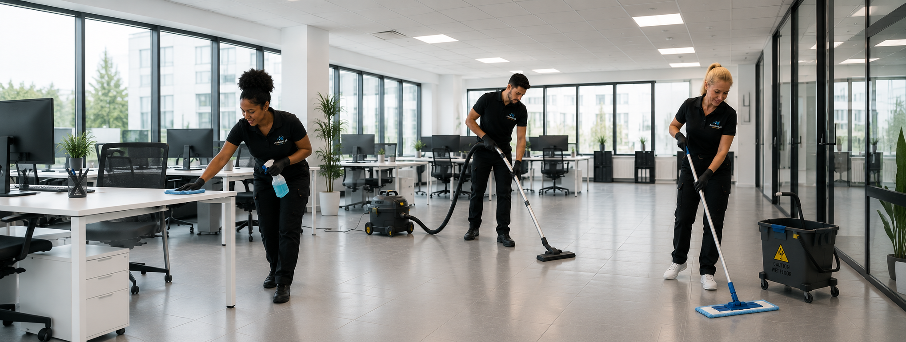
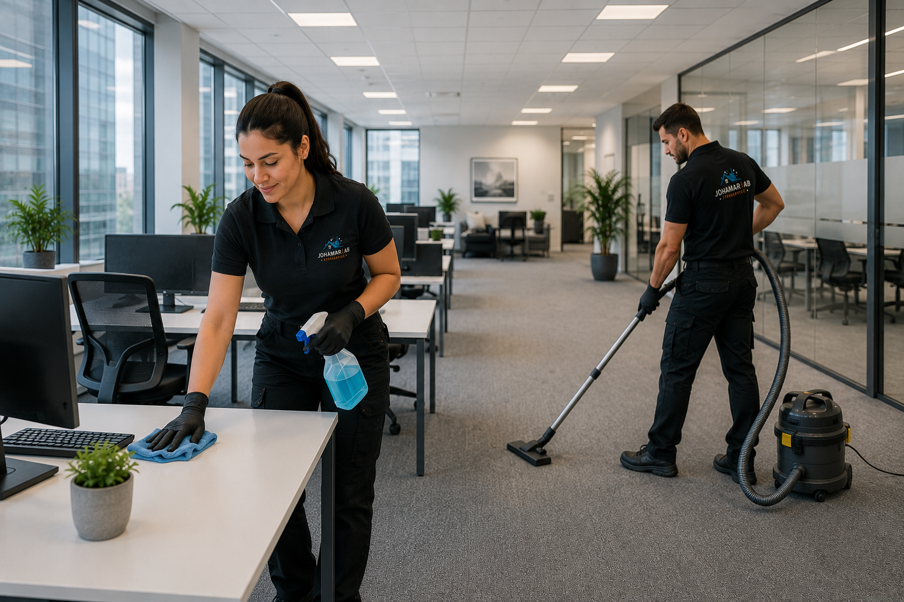
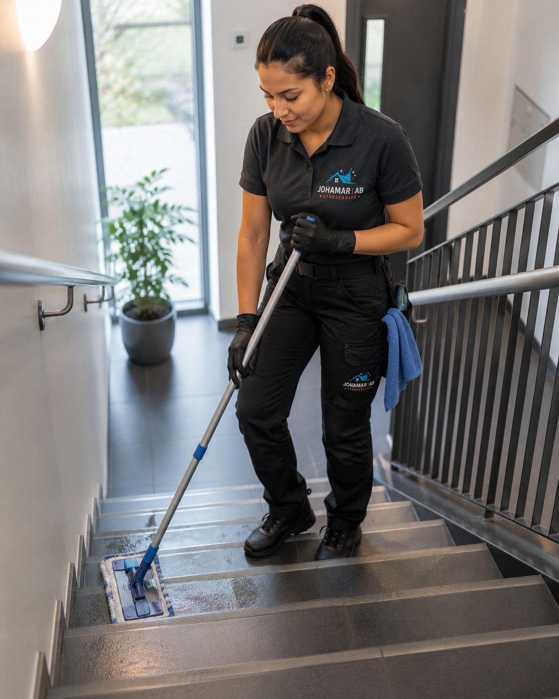
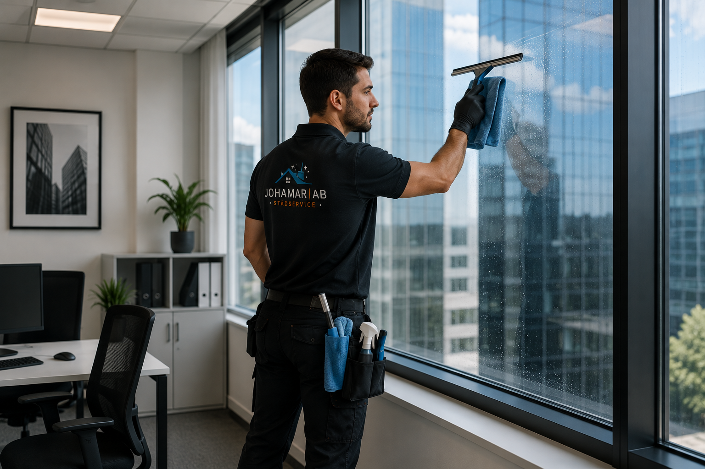
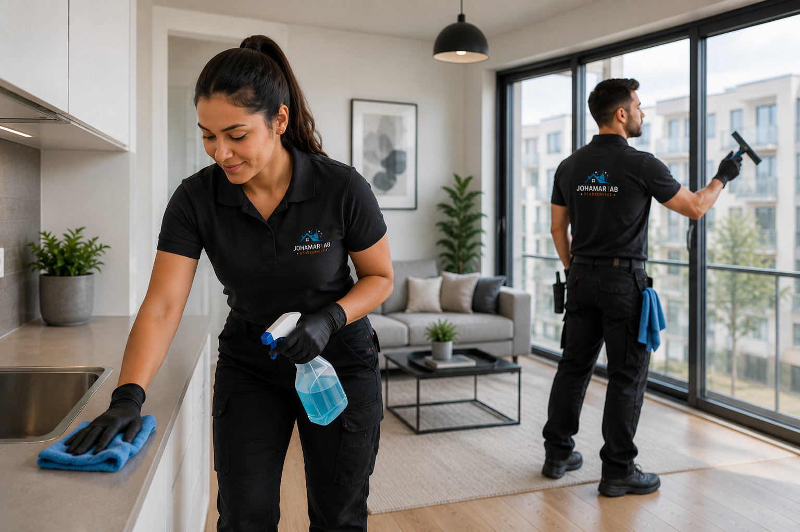

Johamar AB levererar professionell städservice i Stockholm och hela Stockholmsregionen. Hemstädning, kontorsstädning, flyttstädning och mer – pålitlig, noggrann och alltid i tid.
Vi erbjuder ett komplett utbud av professionella städtjänster anpassade efter dina behov.
Rent hem utan stress
Professionell hemstädning i Stockholm anpassad efter dina behov. Våra erfarna städare skapar en ren och hälsosam miljö.

En ren arbetsplats för bättre produktivitet
Professionell kontorsstädning i Stockholm – vi håller din arbetsplats fräsch, trivsam och representativ för medarbetare och besökare.

Välskötta entréer och gemensamma utrymmen
Regelbunden trappstädning i Stockholm för rena, säkra och välkomnande trapphus och gemensamma utrymmen.
Noggrann flyttstädning för en smidig flytt
Professionell flyttstädning i Stockholm enligt branschstandard – vi ser till att du får tillbaka din deposition.
Professionell städning efter bygg- och renoveringsarbeten
Professionell byggstädning i Stockholm efter renovering eller nybygge – vi avlägsnar byggdamm och skräp med stor noggrannhet.

Skinande rena fönster med professionellt resultat
Professionell fönsterputs i Stockholm för privatpersoner och företag – skinande rena fönster, insida och utsida.
Läs mer om varje tjänst i Stockholm:

Vi är ett professionellt städföretag med passion för renhet och ordning. Johamar AB grundades med en enkel vision: att erbjuda Sveriges bästa städservice med hög kvalitet och personlig service.
Vårt erfarna team arbetar alltid med de bästa produkterna och metoderna för att leverera ett fläckfritt resultat varje gång. Vi förstår att ditt hem eller kontor är viktigt för dig, och vi behandlar det med samma omsorg som om det vore vårt eget.
Med Johamar AB får du en pålitlig partner som alltid är i tid, kommunicerar tydligt och aldrig kompromissar med kvaliteten.
Pålitlig städservice med professionell känsla
Vi håller vad vi lovar. Du kan alltid räkna med oss – i rätt tid och med rätt kvalitet.
Våra medarbetare är utbildade, bakgrundskontrollerade och brinner för sitt yrke.
Vi anpassar oss efter ditt schema. Morgon, kväll eller helg – vi städar när det passar dig.
Vi använder professionella produkter och metoder för ett genomgående utmärkt resultat.
Mer än 500 nöjda kunder rekommenderar oss. Din tillfredsställelse är vår prioritet.
Vi väljer miljövänliga städprodukter som är säkra för din familj och naturen.
Vi utför städning i Stockholm och hela Stockholmsregionen. Kontakta oss så bekräftar vi om vi täcker ditt område.
Vi är stolta över att ha hundratals nöjda kunder i hela Stockholmsregionen.
5.0 / 5.0 – Baserat på 500+ kundrecensioner i Stockholm och Stockholms län
Här hittar du svar på de vanligaste frågorna om våra städtjänster.
Det enklaste sättet är att kontakta oss via WhatsApp på +46 72 321 32 32. Du kan också ringa oss direkt eller fylla i kontaktformuläret på denna sida. Vi svarar vanligtvis inom några timmar.
Vi utför städning i Stockholm och hela Stockholmsregionen, inklusive Kungsängen, Järfälla, Sollentuna, Solna, Sundbyberg, Huddinge, Nacka med flera. Kontakta oss om ditt område inte finns med i listan – vi försöker alltid hitta en lösning.
Ja, vi tar med all nödvändig utrustning och professionella städprodukter. Vi använder miljövänliga medel som är säkra för både din familj och naturen. Du behöver inte förbereda någonting.
En hemstädning inkluderar dammsugning och moppning av alla golv, dammtorkning av ytor, rengöring av kök (bänkar, spis, mikro utvändigt, kylskåp utvändigt), badrum och toalett, samt fönsterputs på begäran. Vi kan anpassa städningen efter dina önskemål.
Priset beror på typ av städning, bostadens storlek och hur ofta du önskar städning. Vi erbjuder alltid ett kostnadsfritt prisförslag. Kontakta oss via WhatsApp eller formuläret nedan så ger vi dig ett skräddarsytt erbjudande inom 24 timmar. Vi har konkurrenskraftiga priser och erbjuder RUT-avdrag.
Ja! Johamar AB är registrerade för RUT-avdrag. Det innebär att du kan få upp till 50% rabatt på arbetskostnaden för hemstädning, fönsterputs och trappstädning. Vi hanterar all administration åt dig.
Nej, det är inget krav. Många av våra kunder lämnar en nyckel eller kodnyckel och vi städar medan de är på jobbet. All personal är bakgrundskontrollerad och fullt försäkrad. Vi hanterar dina nycklar med största diskretion och säkerhet.
Vår flyttstädning utförs enligt branschstandard och täcker hela bostaden inklusive ugn, kylskåp, skåp invändigt, och alla ytor. Vi utfärdar gärna ett städintyg på begäran, vilket kan hjälpa dig att få tillbaka din deposition.
Kontakta oss direkt så svarar vi på alla dina frågor. Vi finns tillgängliga via WhatsApp, telefon eller e-post.
Fyll i formuläret eller kontakta oss direkt via WhatsApp, Instagram eller Facebook.
Vi återkommer inom 24 timmar
Rent hem utan stress
Vi hjälper dig att hålla ditt hem rent, fräscht och trivsamt med professionell hemstädning anpassad efter dina behov. Våra erfarna medarbetare arbetar noggrant och effektivt för att skapa en ren och hälsosam miljö där du kan koppla av och trivas.
En ren arbetsplats för bättre produktivitet
Ett rent kontor bidrar till en trivsam arbetsmiljö och ger ett professionellt intryck för både medarbetare och besökare. Vi erbjuder flexibla städlösningar som anpassas efter företagets behov och verksamhet.
Välskötta entréer och gemensamma utrymmen
Regelbunden trappstädning bidrar till en ren, säker och välkomnande fastighet. Vi ser till att trapphus, entréer och gemensamma ytor alltid håller en hög standard.
Noggrann flyttstädning för en smidig flytt
Låt oss ta hand om städningen när du flyttar. Vi utför professionell flyttstädning enligt branschstandard så att bostaden lämnas i bästa möjliga skick för nästa boende.
Professionell städning efter bygg- och renoveringsarbeten
Efter ett byggprojekt krävs en grundlig rengöring för att lokalerna ska vara redo att användas. Vi avlägsnar byggdamm, smuts och rester med stor noggrannhet och fokus på detaljer.
Skinande rena fönster med professionellt resultat
Rena fönster ger bättre ljusinsläpp och ett fräschare intryck. Vi erbjuder professionell fönsterputs för privatpersoner, företag och fastighetsägare med fokus på kvalitet och noggrannhet.